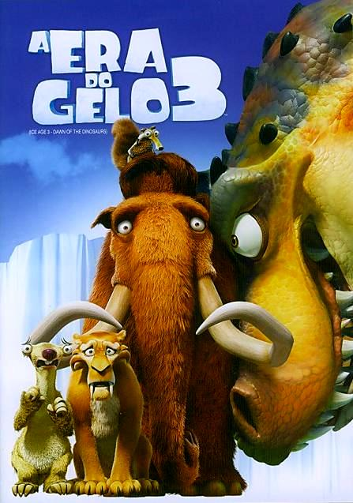

Explicação do filme
Era do Gelo 3 acompanha o grupo de amigos pré-históricos em uma missão de resgate após a atrapalhada preguiça Sid ser sequestrada por uma Tiranossauro Rex por ter adotado seus ovos. Para salvá-lo, o mamute Manny, a grávida Ellie e o tigre Diego viajam para um misterioso e perigoso mundo subterrâneo tropical, onde os dinossauros ainda vivem. Lá embaixo, eles contam com a ajuda de Buck, uma doninha caolha e aventureira, enquanto o esquilo Scrat continua sua busca obsessiva pela noz.
Principais acontecimentos do filme
- Manny e Ellie estão esperando um bebê: O grupo se prepara para a chegada do filhote de mamute.
- Sid se sente excluído e encontra três ovos: Buscando formar sua própria família, Sid descobre três ovos grandes.
- Nascimento dos bebês dinossauros: Os ovos chocam e revelam ser três filhotes de Tiranossauro Rex.
- A mãe T-Rex aparece: A verdadeira mãe dos filhotes invade o mundo do gelo.
Momentos marcantes do filme
- A descoberta de uma selva pré-histórica escondida abaixo do gelo.
- A introdução da destemida e excêntrica doninha caçadora de um olho só.
- A chegada da filhote de Manny e Ellie no meio da aventura.
- A ameaça constante de Rudy, o gigantesco Baryonyx albino.
- A disputa hilária pela noz entre Scrat e a fêmea Scratte.
- A tentativa cômica da preguiça de criar três filhotes de T-Rex.
